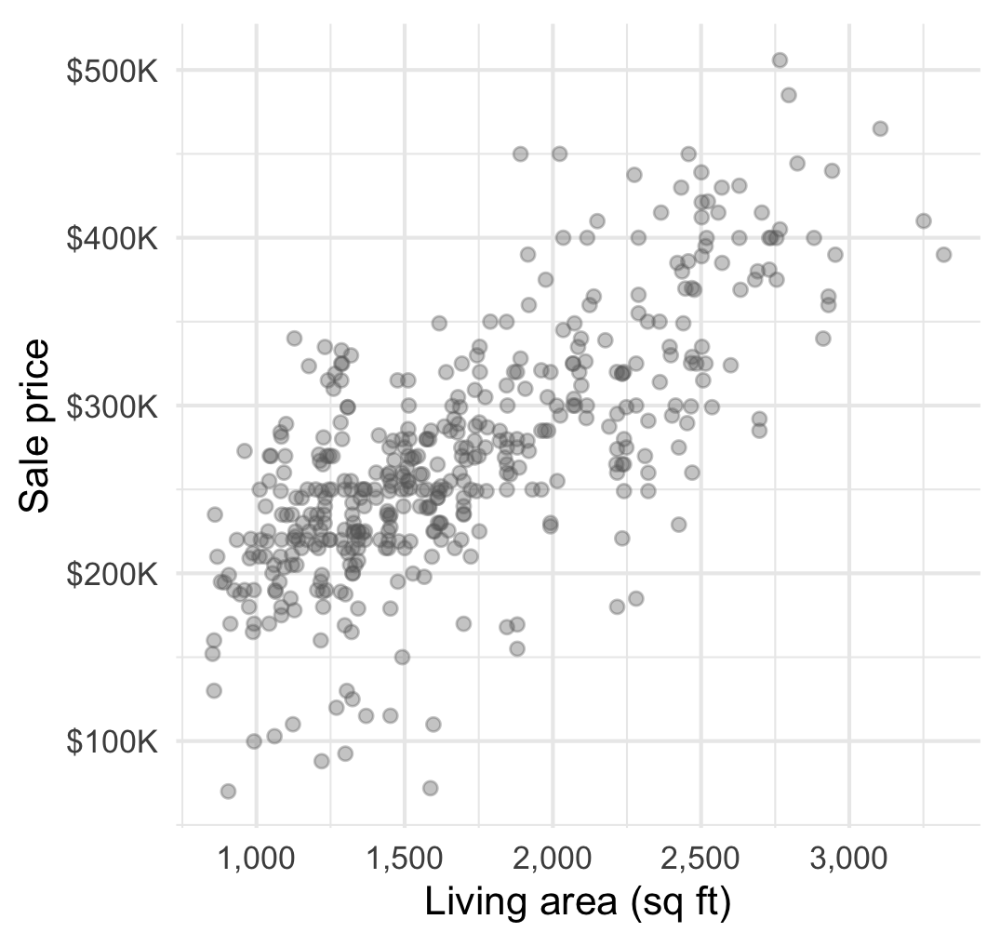
TEMBA Statistics 2026

Each point is one of 438 homes sold in a single ZIP code in southeast Austin.
A 2,000 sq ft home comes on the market. What price would you predict?
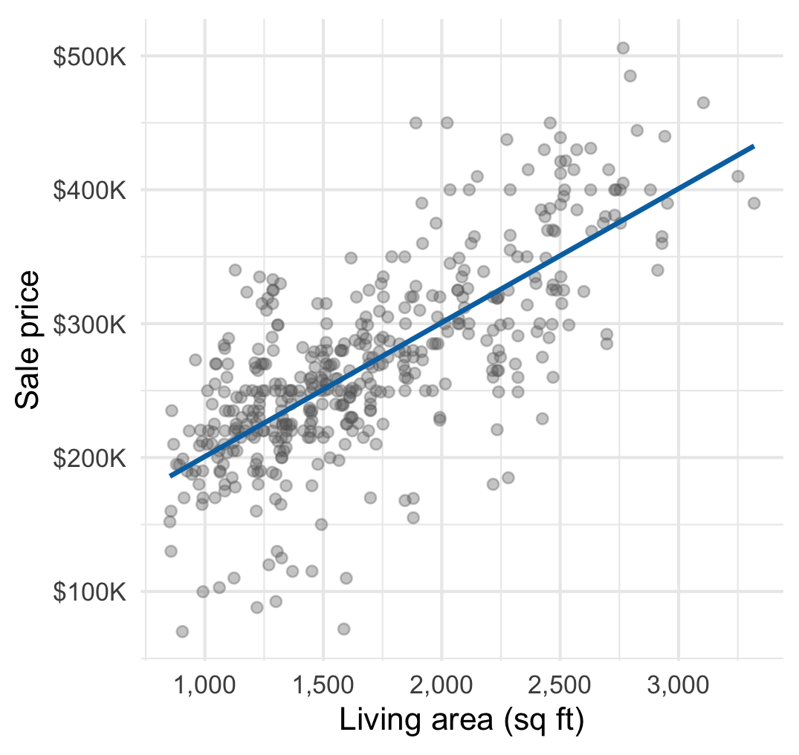
The line runs through the bulk of the data:
\[ \begin{aligned} \widehat{\text{price}} = {} & 100{,}771 \\ & + 100.01 \times \text{area} \end{aligned} \]
We estimated its intercept and slope from these 438 homes.
\[ \hat y = \hat\beta_0 + \hat\beta_1 x \]
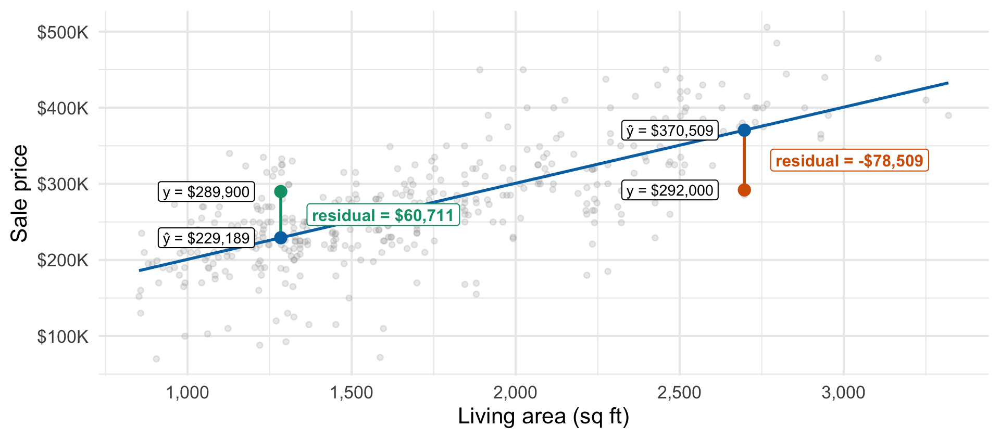
A residual is the observed price minus the fitted value on the line. A positive residual means the home sold for more than the line predicts for its size.
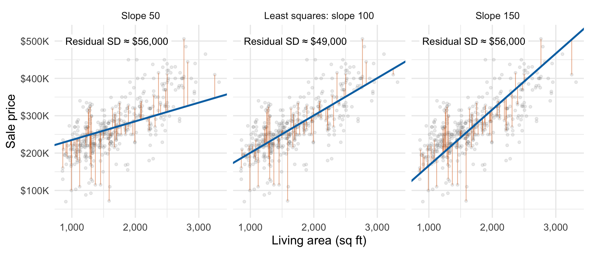
Among all possible lines, least squares chooses the one whose residuals have the smallest variance.
\[ \hat\beta_1 = r\,\frac{s_y}{s_x} = 0.73 \times \frac{72{,}263}{527} \approx 100 \text{ dollars per sq ft} \]
A retailer predicts monthly sales from advertising spend, both in thousands of dollars.
\[ \widehat{\text{sales}} = 125 + 3.2 \times \text{advertising} \]
| Month | Advertising | Sales |
|---|---|---|
| March | 40 | 265 |
| April | 50 | 275 |
| Month | Fitted value | Residual |
|---|---|---|
| March | \(125 + 3.2 \times 40 = 253\) | \(265 - 253 = +12\) |
| April | \(125 + 3.2 \times 50 = 285\) | \(275 - 285 = -10\) |
April had higher sales, but March beat its prediction by $12,000 while April fell $10,000 short.
A negative residual means April sold less than the line predicts for $50,000 of advertising, not that April was a bad month. Residuals average zero, so some months always land below the line.
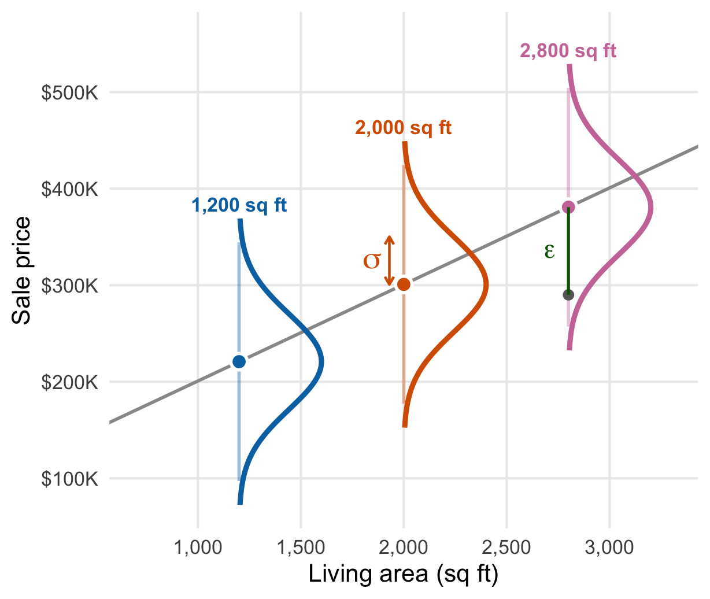
\[ \begin{gathered} y = \beta_0 + \beta_1 x + \epsilon \\ \epsilon \sim N(0, \sigma^2) \end{gathered} \]
| True value (unknown) | Estimate | |
|---|---|---|
| Intercept | \(\beta_0\) | \(\hat\beta_0 = 100{,}771\) |
| Slope | \(\beta_1\) | \(\hat\beta_1 = 100.01\) |
| SD around the line | \(\sigma\) | \(s_e = 49{,}443\) |
The residual standard error, \(s_e\), is essentially the SD of the residuals.
Another sample of homes would give different estimates. Standard errors measure how far estimates tend to fall from the truth, as they did for \(\bar x\) and \(\hat p\).
| Term | Estimate | Std. error | 95% CI | t | p-value |
|---|---|---|---|---|---|
| Intercept | 100,771 | 7,923 | [85,198, 116,343] | 12.72 | <0.001 |
| Living area (sq ft) | 100.01 | 4.48 | [91.20, 108.83] | 22.30 | <0.001 |
| Residual standard error | 49,443 | ||||
| R² | 0.53 | ||||
| Observations | 438 |
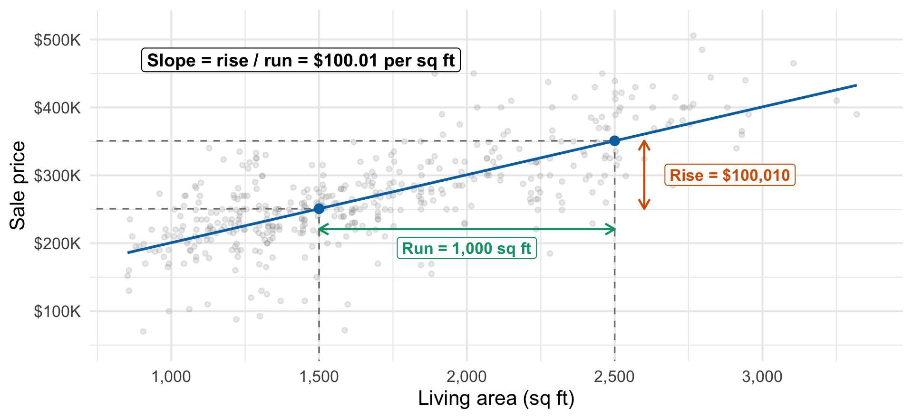
Comparing homes that differ by 1,000 sq ft, the larger ones sold for about $100,000 more on average.
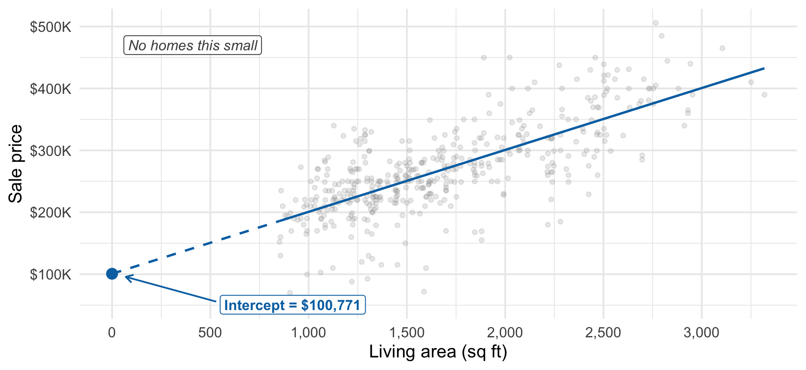
The smallest home in the data has 852 sq ft, so the intercept is an extrapolation to zero square feet with no practical meaning.
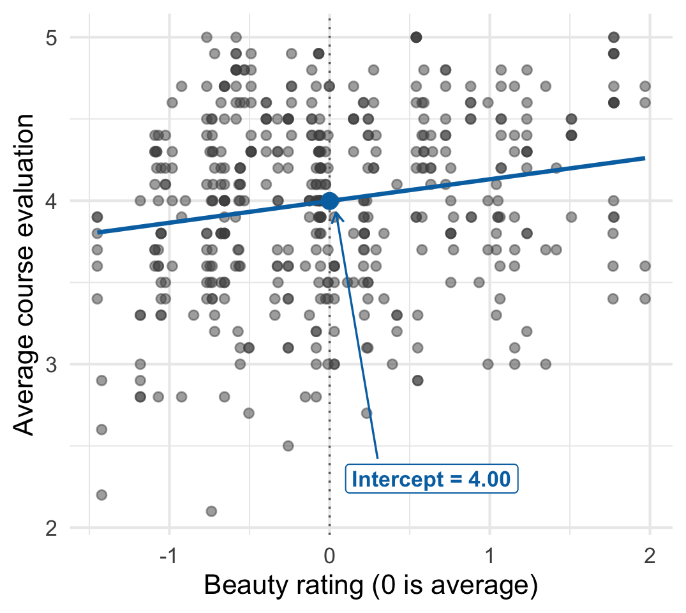
Course evaluations for 463 UT Austin sections (Hamermesh and Parker, 2005).
Each instructor’s beauty rating is shifted so that 0 is the average rating.
The intercept, 4.00, is the predicted evaluation for an instructor of average beauty.
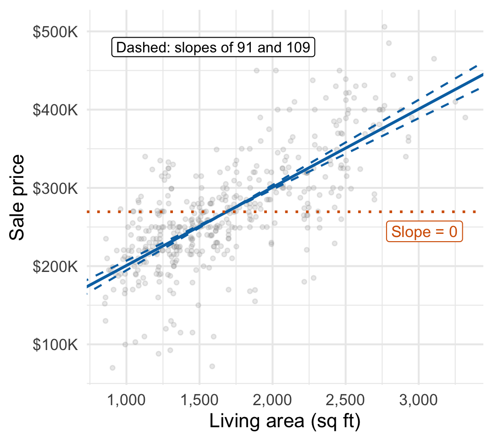
\[ \begin{aligned} &\hat\beta_1 \pm 2\,\text{SE}(\hat\beta_1) \\ &= 100.01 \pm 2(4.48) \\ &\approx [91,\ 109] \end{aligned} \]
Plausible values for the true slope run from about $91 to $109 per square foot.
A flat line, with slope zero, is far outside that range.
A true slope of zero means no linear relationship: the line is flat.
\[ H_0: \beta_1 = 0 \qquad H_A: \beta_1 \neq 0 \]
\[ t = \frac{\hat\beta_1 - 0}{\text{SE}(\hat\beta_1)} = \frac{100.01}{4.48} \approx 22.3 \]
The estimate is about 22 standard errors from zero, so the p-value is far below 0.001. These are the \(t\) and p-value in the slope row of the regression table.
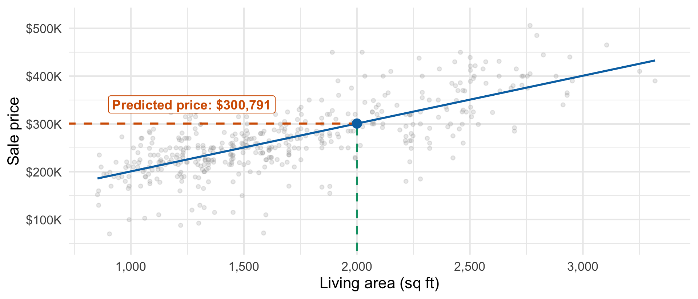
\[ \widehat{\text{price}} = 100{,}771 + 100.01 \times 2{,}000 \approx \$300{,}791 \]
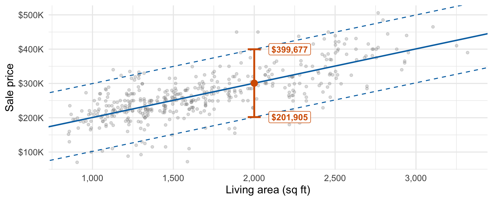
\[ \widehat{\text{price}} \pm 2 s_e = 300{,}791 \pm 2 \times 49{,}443 \approx [\$201{,}905,\ \$399{,}677] \]
The model says about 95% of 2,000 sq ft homes sell within \(2 s_e\) of the line.
| Typical distance | Housing | |
|---|---|---|
| Standard deviation, \(s_y\) | from prices to their average | $72,263 |
| Standard error, \(\text{SE}(\hat\beta_1)\) | from \(\hat\beta_1\) to the true slope | $4.48 |
| Residual standard error, \(s_e\) | from prices to the line | $49,443 |
Which of these would shrink if we had four times as many homes?
The standard error would be about half as large, because the estimate improves with more data. \(s_y\) and \(s_e\) would stay about the same, because sale prices would be no less variable.
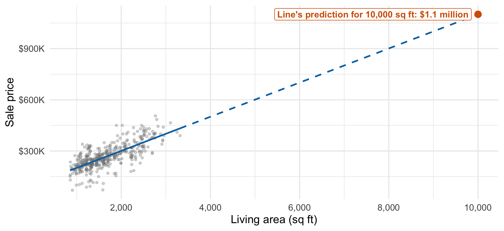
We fit the line to homes from 852 to 3,319 sq ft. These data tell us nothing about how prices behave for a 10,000 sq ft home.
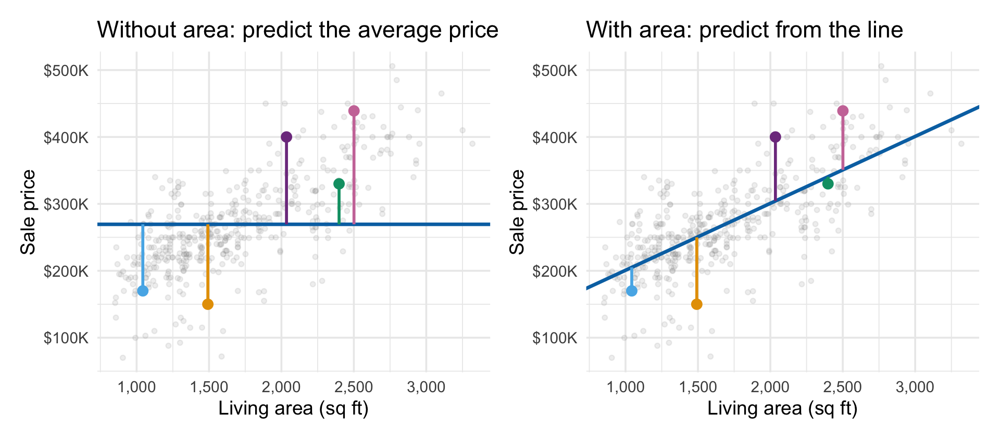
The colored homes are the same in both panels. Which set of prediction errors is smaller?
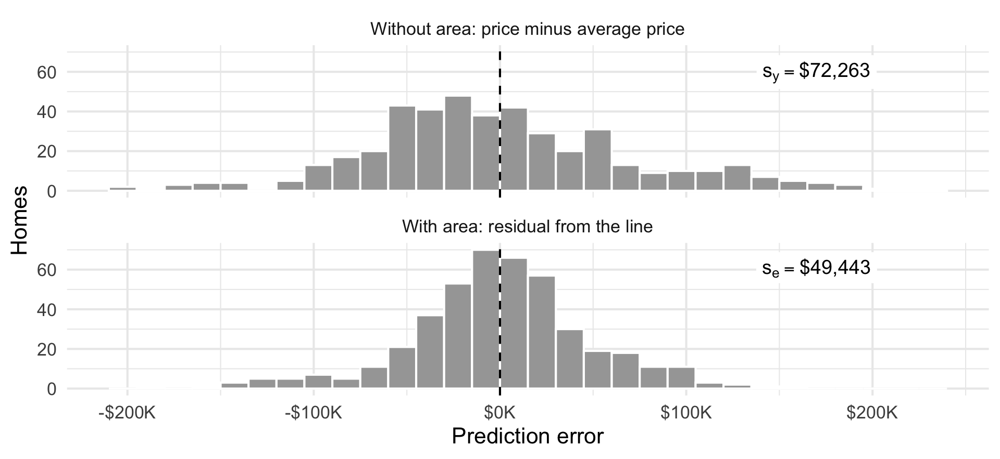
Using living area shrinks the typical prediction error from $72,263 to $49,443.
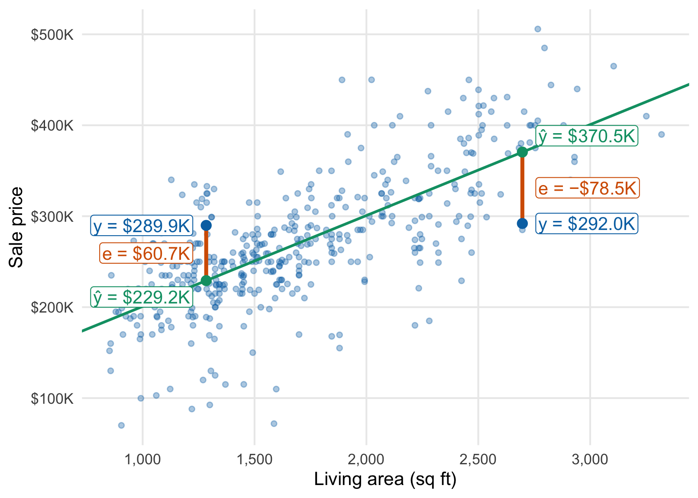
\[{\color{#0072B2}y} = {\color{#009E73}\hat y} + {\color{#D55E00}e}\]
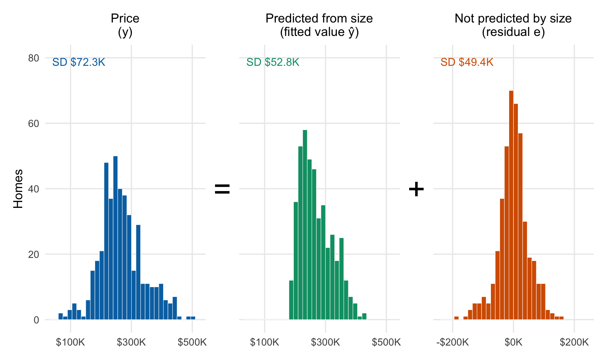
\(\text{Var}({\color{#0072B2}y}) = \text{Var}({\color{#009E73}\hat y}) + \text{Var}({\color{#D55E00}e})\)
In thousands of dollars:
\[{\color{#0072B2}72.3^2} \approx {\color{#009E73}52.8^2} + {\color{#D55E00}49.4^2}\] \[ \begin{aligned} R^2 &= ({\color{#009E73}52.8} / {\color{#0072B2}72.3})^2 \\ &= 1 - ({\color{#D55E00}49.4} / {\color{#0072B2}72.3})^2 \\ &= 0.53 \end{aligned} \]
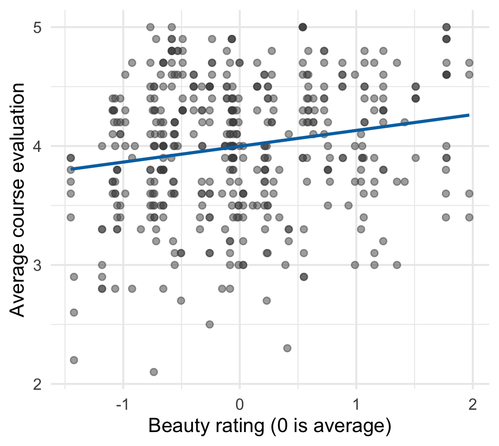
\(R^2 = 0.036\): beauty predicts about 4% of the variation in evaluations.
The 95% CI for the slope is [0.07, 0.20], and \(t = 4.1\).
The data give strong evidence of a weak linear relationship.
A logistics company predicts weekly delivery costs from the number of shipments. The model has \(R^2 = 0.77\) and \(s_e = \$3{,}200\). Weekly costs have a standard deviation of \(s_y = \$6{,}700\).
The CFO says, “An \(R^2\) of 0.77 seems low. I don’t want forecasts that miss by more than $7,000 very often.”
| Typical prediction error | |
|---|---|
| Predicting the average cost | $6,700 |
| Using shipments | $3,200 |
| Reduction | $3,500 |
A $7,000 miss is \(7{,}000 / 3{,}200 \approx 2.2\) residual standard errors. Misses that large should happen in fewer than 5% of weeks, so the model meets the CFO’s standard.
\(R^2\) is a relative measure. To judge the size of errors in dollars, look at \(s_e\).
| One-story | Two-story | |
|---|---|---|
| Homes | 284 | 154 |
| Average price | $252,500 | $300,700 |
| Average living area | 1,468 sq ft | 2,090 sq ft |
Two-story homes sold for about $48,200 more on average. They are also about 622 sq ft larger.
How much of the $48,200 is size?
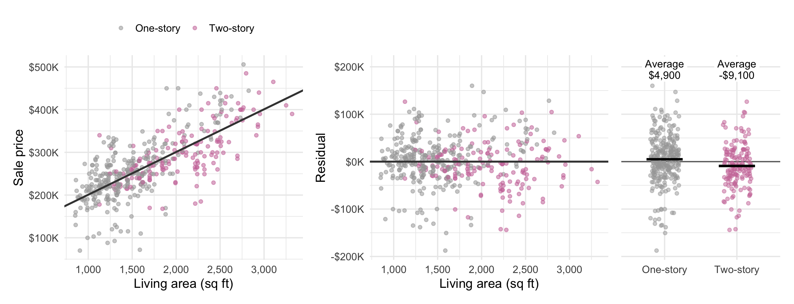
At the same living area, two-story homes sold for about $14,000 less on average.
| One-story | Two-story | |
|---|---|---|
| Median age (years) | 24 | 9.5 |
| Average bathrooms | 2.1 | 3.0 |
| Average bedrooms | 3.1 | 3.6 |
A line in size alone cannot hold these fixed, so the residuals still mix them into the comparison. Multiple regression compares homes that match on several characteristics at once.
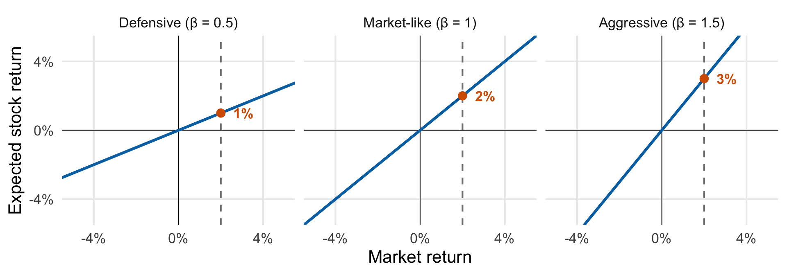
Beta is the slope: a stock’s average move per 1% move in the market. Alpha is the intercept: its average return when the market is flat.
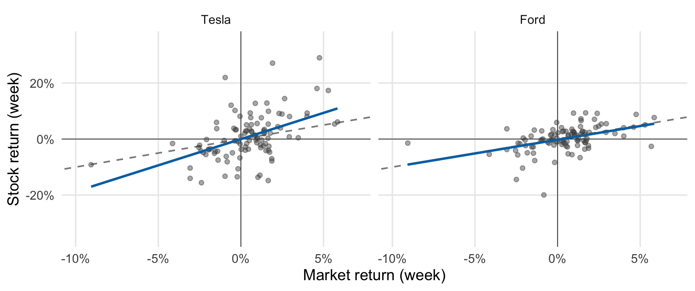
Each point is one week of returns, October 2023 to September 2025; the market is the S&P 500 (SPY). The dashed line has slope 1.
Which stock amplifies market moves? Roughly what is each beta?
| Term | Estimate | Std. error | t | p-value |
|---|---|---|---|---|
| Intercept | -0.02 | 0.72 | -0.03 | 0.980 |
| Market return | 1.87 | 0.33 | 5.60 | <0.001 |
| Residual standard error | 7.19 | |||
| R² | 0.23 | |||
| Observations | 104 |
Returns in percent. When the market moves 1%, Tesla moves about 1.87% on average. The intercept, \(\hat\alpha\), is small next to its standard error.
The \(t\) of 5.60 tests \(\beta = 0\). For a stock, the more useful question is whether \(\beta = 1\).
| Stock | \(\hat\beta\) | \(\hat\beta \pm 2\,\text{SE}\) | Is 1 plausible? |
|---|---|---|---|
| Tesla | 1.87 | [1.20, 2.54] | No |
| Ford | 0.98 | [0.60, 1.36] | Yes |
\[ t = \frac{\hat\beta - 1}{\text{SE}(\hat\beta)} = \frac{1.873 - 1}{0.335} \approx 2.61, \qquad \text{p-value} \approx 0.009 \]
We have good evidence that Tesla amplifies market moves. Ford’s estimate is just under 1, and the data are consistent with a beta of 1.
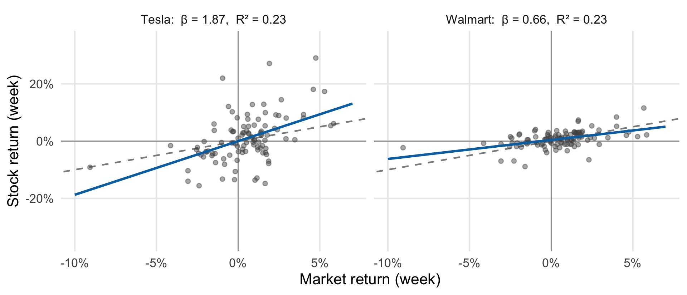
Both correlations with the market are about 0.48.
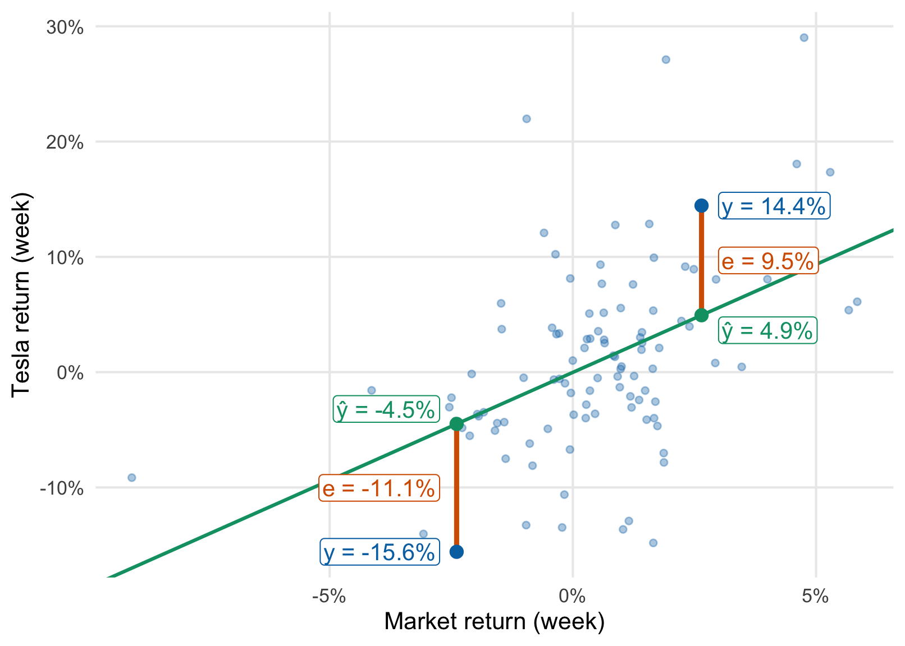
\[{\color{#0072B2}y} = {\color{#009E73}\hat y} + {\color{#D55E00}e}\]
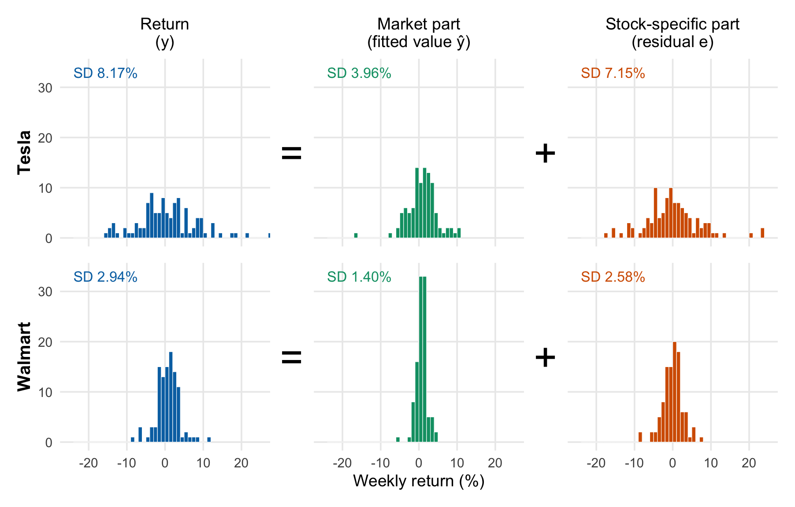
\(\text{Var}({\color{#0072B2}y}) = \text{Var}({\color{#009E73}\hat y}) + \text{Var}({\color{#D55E00}e})\)
\[{\color{#0072B2}8.17^2} \approx {\color{#009E73}3.96^2} + {\color{#D55E00}7.15^2}\] \[ \begin{aligned} R^2 &= ({\color{#009E73}3.96} / {\color{#0072B2}8.17})^2 \\ &= 1 - ({\color{#D55E00}7.15} / {\color{#0072B2}8.17})^2 \\ &= 0.23 \end{aligned} \]
\[{\color{#0072B2}2.94^2} \approx {\color{#009E73}1.40^2} + {\color{#D55E00}2.58^2}\] \[ \begin{aligned} R^2 &= ({\color{#009E73}1.40} / {\color{#0072B2}2.94})^2 \\ &= 1 - ({\color{#D55E00}2.58} / {\color{#0072B2}2.94})^2 \\ &= 0.23 \end{aligned} \]
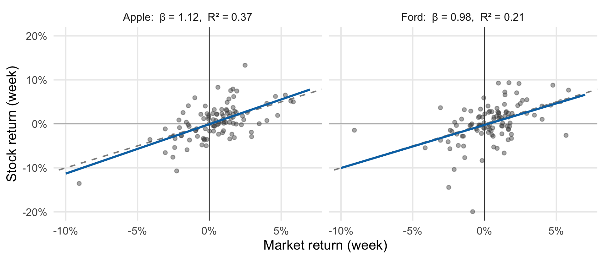
Apple and Ford both move about one-for-one with the market on average. Ford’s returns scatter more around its line, so the market predicts less of their variation.
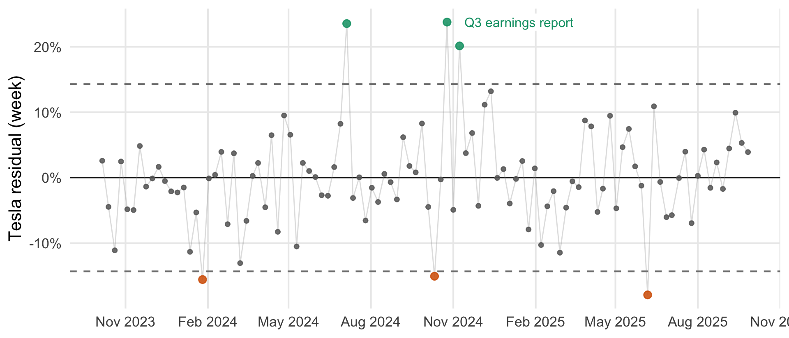
A residual is Tesla’s return minus what the market model predicts for that week. Finance calls it an abnormal return. The dashed lines are two SDs above and below zero.